Curiosidades do Mundo Bruxo:
Hogwarts:
1. Trouxas não podem ver Hogwarts.
Essa com certeza você já imaginava, mas é verdade. Por conta de diversos encantamentos os trouxas ao chegarem nos terrenos de Hogwarts veem ruínas e placas de "fique longe". O que será que o Jacob viu quando foi à Escola de Magia e Bruxaria no final do filme Animais Fantásticos: Os Crimes de Grindewald?
2. Uma pena e um livro mágicos decidem se você irá ou não para Hogwarts!
Sabia dessa? Na escola existem uma pena e um livro que decidem o seu destino como bruxinho! Quando a criança manifesta a sua magia, a pena encatanda tenta escrever o nome no livro, e ele decide se a criança pode ou não ir para Hogwarts.
3. O Salão Comunal da Sonserina fica debaixo do Lago Negro!
Ele é banhado por uma luz esverdeada e fica bem debaixo do grande Lago Negro, legal não é?
4. Hogwarts possui uma sala que se transforma em outras salas!
Chamada de Sala Precisa, ela se localiza no sétimo andar, e fica atrás de uma tapeçaria de Barnabas O Maluco que tenta ensinar balé aos Trolls. Para descobrí-la, você precisa passar três vezes onde a porta fica e pensar constantemente no que você precisa. Assim ela irá se transformar nnum local com tudo o que você precisa naquele momento.
5. Hogwarts é um colégio público!
Isso mesmo, uma escola tão incrível como Hogwarts não é paga!
Personagens:
1. Quando Dumbledore se posicionava a frente do espelho de Ojesed ele via sua família reúnida.
2. Harry e Rony nunca se formaram oficialmente em Hogwarts.
3. O trio (Harry, Rony e Hermione) apareceram nos sapos de chocolate.
4. A atriz que interpretou Murta que geme, na época que o filme foi filmado tinha 40 anos!
5. Durante a cena do beijo de Harry e Hermione, o ator de Rony teve um ataque de riso e teve de ser espulso do set de filmagem!
6. Para o ator que interpretou Harry Potter, o seu assessório favorito eram os óculos.
Ele usou mais de 160 pares dos óculos durante os filmes.
7. Quando era pequena, Luna tinha medo de fada dos dentes.
8. Após a cena da morte de um dos gêmeos, os atores ficaram abalados e se abraçaram dizendo "eu te amo" um para o outro.
9. Harry é a única pessoa que já recebeu as 3 maldições imperdoáveis e continua vivo.
As relíquias da Morte:
No mundo bruxo elas realmente existiram, e Dumbledore e Harry tiveram elas durante o filme. Tendo o Harry possuído as três em momentos diferentes dos livros. E aqui está a história delas:
O Conto dos Três Irmãos:
"Era uma vez três irmãos que viajavam numa estrada deserta e tortuosa ao anoitecer. Depois de algum tempo, os irmãos chegaram a um rio fundo demais para passar a pé e perigoso demais para atravessar a nado. Os irmãos, eram porém exímios em magia, e então simplesmente agitaram as suas varinhas e fizeram aparecer uma ponte sobre as águas traiçoeiras. Iam a meio da ponte quando viram o caminho bloqueado por um vulto encapuzado. Era a Morte.
E a Morte falou-lhes. Estava zangada por ter sido roubada em três novas vítimas, porque o normal era os viajantes se afogarem no rio. Mas a Morte era astuta. Fingiu felicitar os três irmãos pela sua magia, e disse que cada um ganharia um prémio por ter sido inteligente o bastante para lhe escapar.
Então, o irmão mais velho, que era um homem combativo, pediu uma varinha mais poderosa que todas as que existissem: uma varinha que vencesse sempre todos os duelos, uma varinha digna de um feiticeiro que derrotara a Morte! Então, a Morte atravessou a ponte, dirigiu-se a um velho sabugueiro na margem do rio, moldou uma varinha de um galho da árvore e entregou-a ao irmão mais velho.
Depois, o segundo irmão, que era um homem arrogante, resolveu humilhar ainda mais a Morte e pediu o poder de restituir a vida aos que ela levara. Então a Morte apanhou uma pedra da margem do rio e entregou-a ao segundo irmão, dizendo-lhe que a pedra tinha o poder de ressuscitar os mortos.
Depois, a Morte perguntou ao terceiro e mais jovem dos irmãos, o que queria. O irmão mais novo era o mais humilde e também o mais sensato dos irmãos, e não confiava na Morte. Pediu, então, algo que permitisse ele sair daquele lugar sem ser seguido pela Morte. E a Morte, de má vontade, entregou-lhe o seu próprio Manto da Invisibilidade.
Depois a Morte afastou-se para um lado e deixou os três irmãos continuarem o seu caminho e foi o que eles fizeram, comentando, com espanto, a aventura que tinham vivido e admirando os presentes da Morte.
No devido tempo, os irmãos se separaram, seguindo cada um o seu destino. O primeiro irmão viajou uma semana ou mais e, ao chegar a uma vila distante, procurou outro feiticeiro com quem tinha desavenças. Armado com a Varinha de Sabugueiro como arma, ele não poderia deixar de vencer o duelo que se seguiu.
Deixando o inimigo morto estendido no chão, o irmão mais velho dirigiu-se a uma estalagem, onde se gabou, em alto e bom som, a poderosa varinha que arrancara à própria Morte, e que o tornava invencível.Na mesma noite, outro feiticeiro aproximou-se silenciosamente do irmão mais velho enquanto dormia na sua cama, embriagado pelo vinho. O ladrão levou a varinha e, para à cautela, cortou o pescoço ao irmão mais velho. Assim a Morte levou o irmão mais velho.
Entretanto, o segundo irmão viajou para a sua casa, onde vivia sozinho. Aí, tomou a pedra que tinha o poder de ressuscitar os mortos e girou-a três vezes na mão. Para seu espanto e satisfação, a figura da rapariga em que tivera esperança de desposar, antes da sua morte precoce, surgiu instantaneamente diante dele. Contudo, ela estava triste e fria, separada dele como que por um véu. Embora tivesse retornado ao mundo dos mortais, o seu lugar não era ali, e ela sofria. Por fim, o segundo irmão, enloquecido pela saudade, matou-se para poder verdadeiramente se unir a ela. E assim a Morte levou o segundo irmão.
Embora a Morte procurasse o terceiro irmão durante muitos anos, jamais conseguiu encontrá-lo. Somente quando atingiu uma idade avançada é que o irmão mais novo tirou, finalmente, o Manto da Invisibilidade e o deu ao seu filho. E então acolheu a Morte como uma velha amiga e acompanhou-a de bom grado, e como iguais, partiram desta vida."
Criaturas Mágicas:
Basilisco
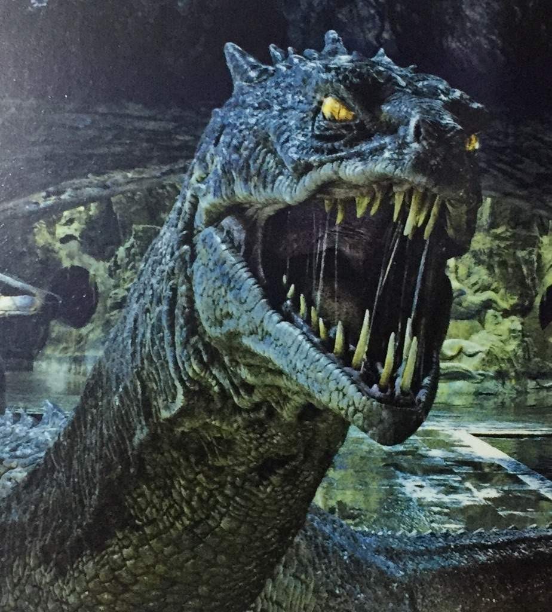Também conhecido como Rei das Cobras, o primeiro basilisco que se tem informações foi criado por Herpo, o Sujo, um bruxo grego das trevas e ofidiglota, que descobriu que se um ovo de galinha é chocado por um sapo nasce então uma cobra gigantesca com poderes extraordirariamente perigosos.
O basilisco é uma cobra que pode alcançar 15 metros de altura, suas presas são excepcionalmente venenosas, mas seus olhos grandes e amarelos são sua grande arma. Quem os encara sofre morte instantânea.
A criatura come todos os mamíferos e aves, e a amioria dos réptes. Sendo a idade da espécime criada por Herpo, o Sujo alcançado noventa e sete anos.
Tronquilho
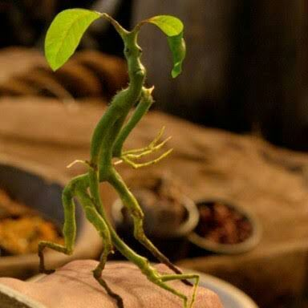O tronquilho é uma criatura que guarda árvores, é econtrado pricnipalmente no oeste da Inglaterra, sul da Alemanha e certas florestas da Escandinávia. É muito difícil de ser localizado por ser muito pequeno, tendo uma altura máxima de 20cm e ser aparentemente formado por tronco e gravetos com dois olhinhos castanhos.
Essa criatura se alimenta de insetos, é pacífica e extremamente tímida. Mas se a árvore que por ele está sendo protegida é ameaçada, o tronquilho salta sobre a pessoa e fura seus olhos com seus dedos longos e afiados.
Dar bichos-de-conta para o tronquilho o acalma por tempo suficiente para realizar a retirada da madeira da árvore para fabricação de varinhas.
Seminviso
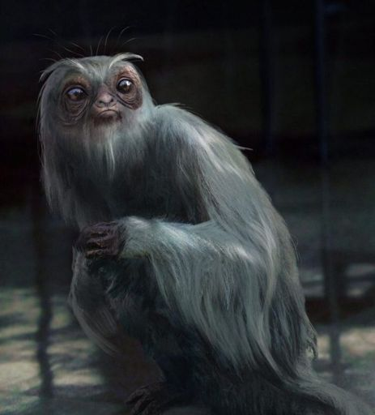O seminviso é encontrado no Extremo Oriente, embora não seja tão fácil de ser encontrado, pois se torna invisível quando ameaçado. Ele só pode ser visto por bruxos treinados para sua captura.
É uma criatura herbívora e pacifica. Sua pelagem longa e sedosa é muito valorizada, pois seus fios podem ser usados para tecer capaz de invisibilidade.
Fada Mordente
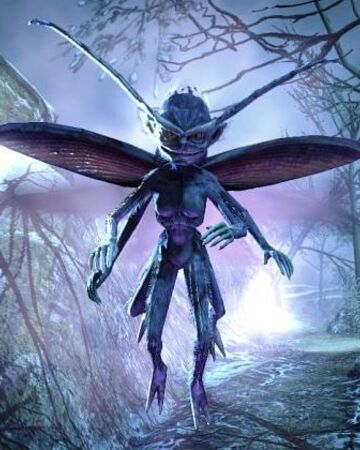Muitas vezes confundida com uma verdadeira fada, ela tem uma forma humana minúscula, mas é coberta por pelos espessos e dotada de dois pares de pernas e braços.
Suas asas se assemelham a de um besouro. São encontradas em todo norte da Europa e América preferindo climas frios. Põem até quinhentos ovos de cada vez e os enterram. Seus filhotes nascem entre duas e tres semanas depois.
Seus dentes são venenosos, necessitando de antídoto a quem for mordido.
Erumpente
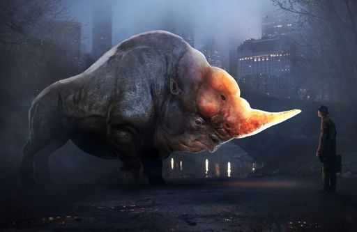É um animal africano, de grande porte e força. De longe pode ser confundido com um rinoceironte, mas podendo pesar até uma tonelada. Seu coro é forte e repele a maioria dos feitiços, tem um chifre afiado e um rabo que lembra uma corda. Dá à luz apenas um filhote por vez.
Ele não ataca a menos que seja provocado com dor, sendo um final catastrófico para quem for atacado por ele. Seu chifre possui uma secreção que, onde for injetada o objeto ou pessoa irá explodir.
Fiuum
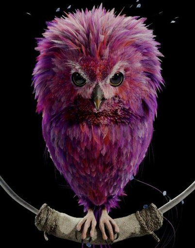Uma ave africana com pelagem podendo variar entre: rosa, laranja, verde-clara ou amarela. Há muitos anos esse animal fornece penas para canetas de luxo e põe ovovs desenhados em cores vivas.
Seu canto no inicio suave, leva quem o escuta à loucura. Sendo assim vendida com um feitiço silenciador, tendo de ser reforçado mensalmente.
Hipogrifo
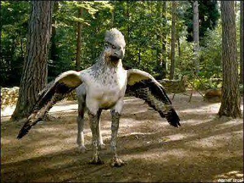Nativo da Europa, embora seja atualmente encontrado no mundo inteiro. Tem cabeça de águia e corpo de cavalo. Pode ser domesticado por peritos. Ao se aproximar deve-se manter o contato visual e fazer uma reverência, se o animal retribuir a reverência é seguro se aproximar.
Ele come insetos do chão, mas também aves e pequenos mamíferos. Em época de acasalamento, o animal crontrói um ninho no chão e deposita apenas um ovo que choca em vinte e quatro horas.
Kappa
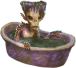É um demônio aquático originado do Japão, que vive em lagos e rios. Tem um oco no cocuruto que usa para carregar água.
O jappa se aliemnta se sangue humano, para não fazer mal a alguém, deve-se atirar nele um pepino com o nome da pessoa gravado à faca. E ao enfrentar um kappa, é necessário forçá-lo a se curvar, para assim escorrer a água de sua cabeça drenando sua força.
Sereianos
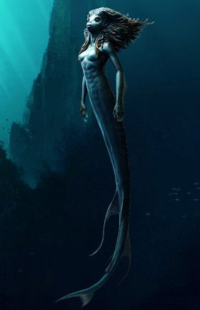Os sereianos existem em todo o mundo, lembram a forma humana. Seus costumes são misteriosos, sendo que os humanos que aprenderam sereiaco, dizem que sua estrutura é muito bem organizada. O tamanho dependendo da localização.
os sereianos mais antigos encrontrados foram as chamadas sereias na Grécia, e é nas águas mais trépidas que encontramos as belas sereias descritas por trouxas.
Pelúcio
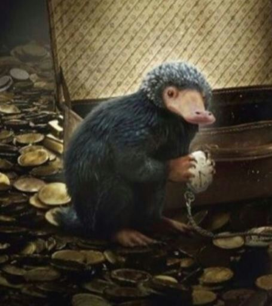É um animal britânico. Fofinho e de pelo preto, possui um focinho longo. Ele faz tocas subterrâneas em busca de tesouros, pois é atraído por tudo que brilha.
Embora seja manso, e possível de se afeiçoar. Não se deve ter em casa por ser muito destrutivo. Tendo de seis a oito filhotes por ninhada.
Fênix
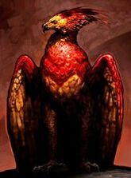É um pássaro magnifico, de cor vermelha e porte de cisne com rabo, bico e garras dourados. Faz seus ninhos no cume das montanhas da Chima, Índia e Egito, tendo uma vida longuissima por poder se regenerar.
É manso e se alimenta apena de ervas. Podendo desaparecer e reaparecer quando quer. Seu canto é mágico, confortando os corações bons e amedrontando os de coração impuro. Suas lágrimas são curativas.
Trasgo
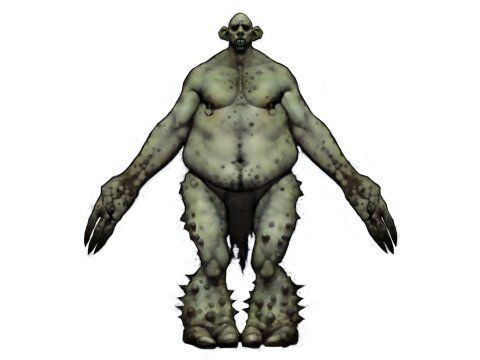Atingindo mais de três metros de altura e podendo pesar mais de uma tonelada, O trasgo é um animal temido. É originado da Escandinávia e podendo hoje ser encontrado na Grã-Bretanha, Irlanda e áreas do norte da Europa. O tanto que tem de força tem de falta de inteligência.
Falam em grunhidos, alguns sendo capazes de serem treinados e entenderem algumas palavras simples. Sendo usados para guardiões quando treinados. Existem três tipos de trasgos, sendo o montanhês o maior. Eles comem carne crua e não escolhem muito suas presas, podendo ser animais ou humanos.